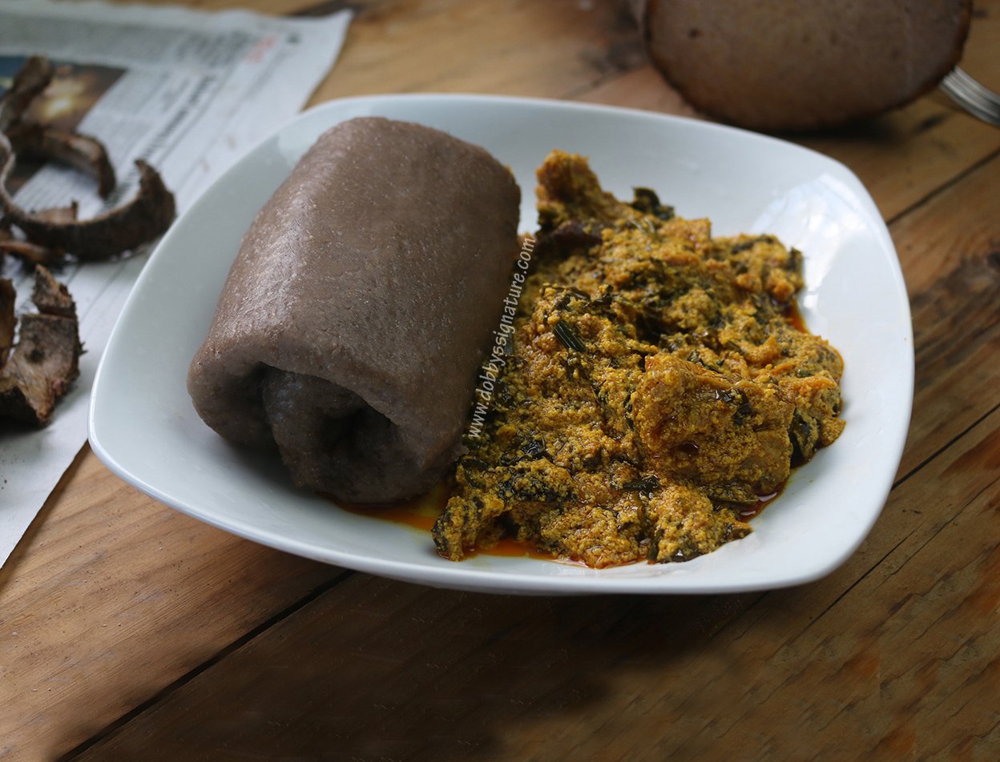

Welcome to your one-stop shop for the ultimate comfort food experience - Amala heaven! We offer a delectable selection of Amala, the classic Nigerian dish made from yam or cassava flour, served with a variety of soul-satisfying soups and a bounty of protein options.

Here's what awaits you:
- Amala Perfection: Our Amala is prepared with the utmost care, ensuring a smooth, deliciously stretchy texture that perfectly complements every flavorful soup.
- A Symphony of Soups: From the classic Ewedu and Gbegiri to the fiery Ogbono and the rich Efo Riro, we have a soup to tantalize every taste bud.
- Protein Powerhouse: Choose from a variety of protein options like succulent pounded yam (Iyan), flavorfulassorted meats (assorted meats can include chicken, beef, tripe, fish), and even crispy fried fish (kpomo) to complete your Amala feast.